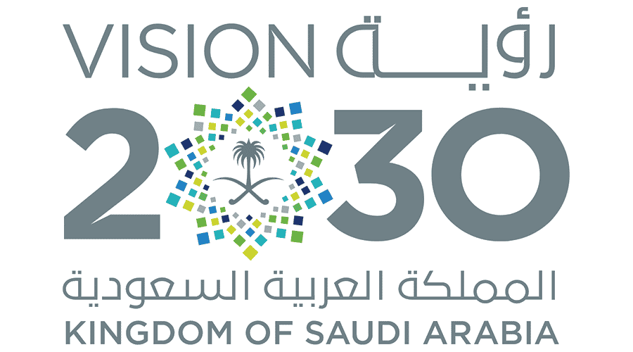
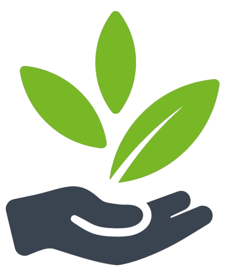

Green Riyadh project is one of the most ambitious urban forestation projects in the world. It is one of Riyadh’s Four Megaprojects launched by the Custodian of the Two Holy Mosques, King Salman Bin Abdulaziz, on 19 March 2019. The project will be a milestone that contributes to fulfilling a key goal of the Saudi Vision 2030 to promote Riyadh’s position among the world’s top 100 most livable cities..

Vision
The Green Riyadh project will contribute to increasing the per capita share of green space, and raise the total green spaces by planting trees around all city features and facilities as well as in all its provinces. All of the greenings will be watered by recycled water from an irrigation network. The greening initiative will lead to improved air quality and reduced temperatures in the city. As a consequence, this project will encourage Riyadh citizens to follow a healthy lifestyle which is part of the Kingdom’s Vision 2030.

Benifits
- Reduce ambient temperature by 2 Celsius degrees during summer season
- Reduce temperatures by 8-15 Celsius degrees in selected intensively afforested locations across the city
- Improve the air quality by reducing CO2 concentration by 3-6%
- Reduce dust concentration in the air
- Reduce annual power consumption by 650 gigawatt/hour, through encouraging the principles of Green Building techniques that use green ceilings and walls